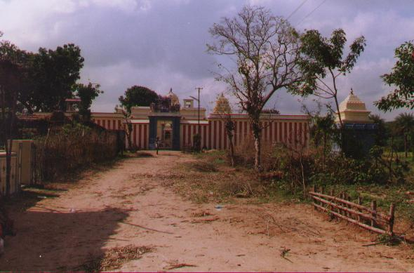
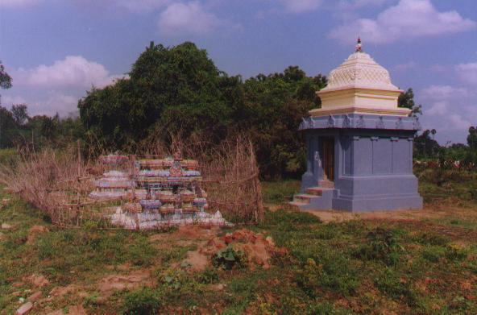
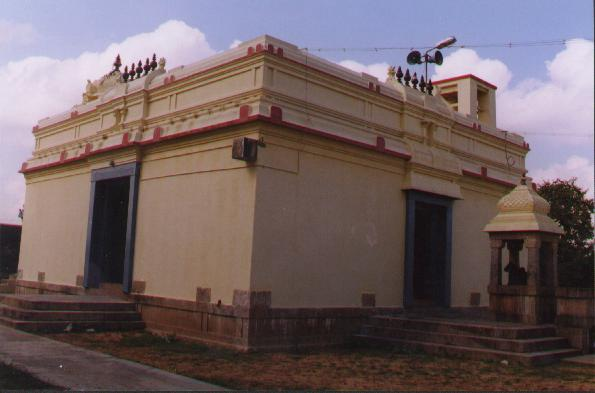
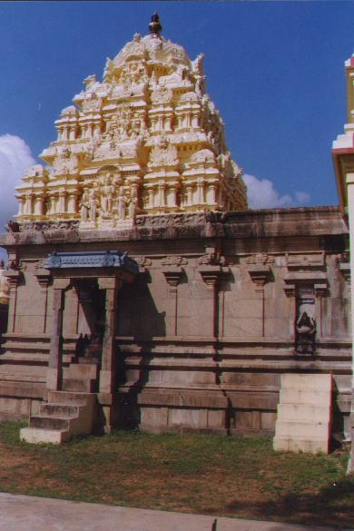
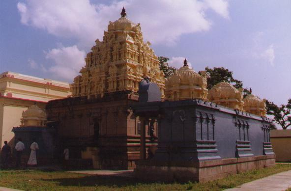
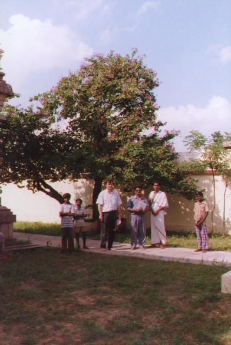
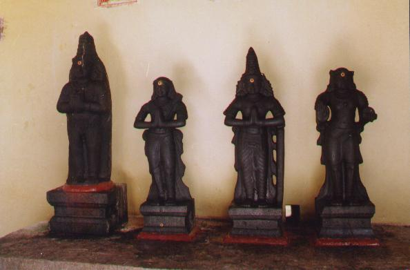

tilataippati
- Identifier: KT058
- Modern Name (NIC):
- Modern Name (M.I.): cetalaippati, tilatarppaṇapuri
- Modern Name of the site: kōvil pattu
[allegedly because the temple owned 10 vēli of land,
but prof. G. Vijayavenugopal thinks it is a reinterpretation
of kōvil paṟṟu]
- Modern Name (Govt Press): ??
- Nearby village: cetala pati (there is a cetalapati māriyammaṉ ālayam)
- Other name: Tilatarppaṇapuri
- Modern District & Taluk:
tiruvārūr DT (naṉṉilam TK or kuṭavācal TK)
[according to BABU]
or tiruvārūr DT (valaṅkaimāṉ TK)
[NOTE: Old Govt Press listing for pāpanācam TK contains a kīḻ kōvil pattu,
which is probably now included inside valaṅkaimāṉ TK]
- Old administrative location: Tanjore DT (?Nunnilam TK)
- Nearby town: pūntōṭṭam (?? valaṅkimāṉ TK)
- Visit date: 12 january 2000
- GPS reading: 10 deg. 56.58' & 79 deg. 38.31'
- Railway station:
- Longit. 79 deg. 38'; Latit. 10 deg. 57' [KT058]
- C.D.Maclean-3: entry: NUNNILAM, p. 602, col. 2,
[??Covilputt (in Places of archaeological interest)]
- Location: according to PK: Cōḻa Nāṭu, Kāvēri Teṉ Karai (KT058)
- Name inside hymns:
- Name inside PK:
- Rank inside third volume of PIFI: 149
- Rank inside Civastala Mañcari: 148
- Rank on PY576 map:
- Total number of patikam-s: 1
- Campantar: 1 patikam
[[NOTE (VMS): this place is now known as citalaippati;
tilataippati is the name of the village
and matimuttam is the name of the temple.]]
11 pictures taken on 2000 january 12th (by G. Ravindran)











- Patikam 2_118